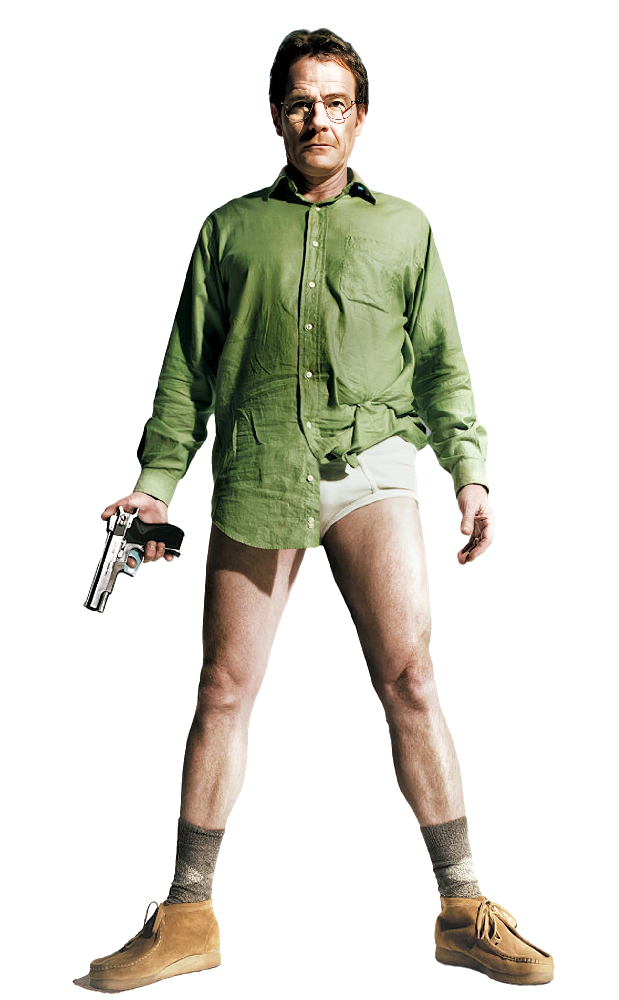

Gq
British
Gentlemen's Quarterly
June
2014
€3.99
June
2014
€3.99
Politics
'Rupert
Murdoch
is a
remarkable
man'
Alastair Campbell interviews
Alex SalmondBoxing Exclusive
Rematch!The Cobra VS The Saint
Carl Froch and George Groves on the Biggest british fight
of all time
Interview by Paul Henderson
Time for change?
24 -pageWatch guide
All the brands and styles that matter
right now
Hey, Hollywood, didn't you hear?
Breaking Bad's Bryan Cranston is
the danger!
Story by Stuart
McGurk Photographed for British GQ by
Norman Jean Roy
